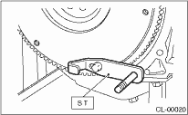
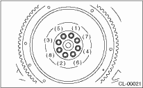

1. Install the flywheel and ST.
| ST 498497100 | CRANKSHAFT STOPPER |

2. Tighten the flywheel attaching bolts to the specified torque.
NOTE:
Tighten the flywheel attachment bolts gradually. Each bolt should be tightened to the specified torque in crisscross order.
Tightening torque:
72 N·m (7.3 kgf-m, 53.1 ft-lb)

3. Install the clutch disc and cover. 
4. Install the transmission assembly.